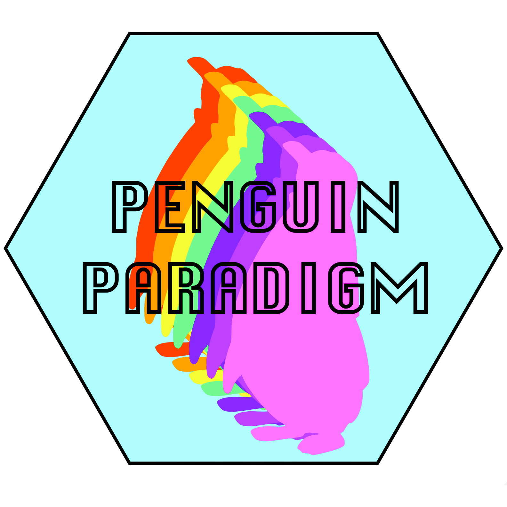

Penguin Paradigm
About Penguin Paradigm
The Paradigm is not just a repository software solution. Rather, we see it as having three complementary components:
- The Flock
- a vibrant, highly active community supporting the work of the project which shares an underlying philosophy behind all that it does
- The Slide
- design (and other) principles involved in constructing a successful Penguin “slide” for use with compatible digital objects
- The Floe
- software components, the Ruby gems, that the Penguin Paradigm community has constructed which are combined together to provide a local installation
The dark horse candidate for Hydra replacement
Penguins are joyful in a challenging environment; penguins weather the worst storms by relying on each other; penguins aren't afraid of a deep dive. That's us: that's the Penguin Paradigm.
The Penguin Paradigm maintains three points of presence on the web with information for various audiences:
- this site, which is essentially the public brochure for Penguin Paradigm
- the Penguin Paradigm wiki, which holds more detailed information about the Paradigm: its community, its meetings and events, and its technologies
- a GitHub site which provides the code, documentation and detailed information aimed at developers
Follow the movement on Twitter @penguinparadigm